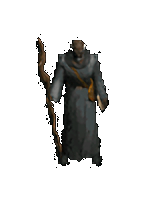
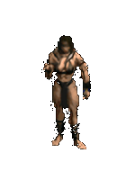
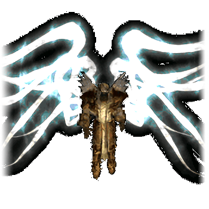
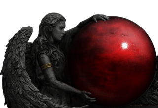

Runes
RuneWords
Uniques
Base

整个开发过程可以说极度依赖ChatGPT,GPT对于前端的问题掌握很深。 只要把基础逻辑阐述清楚，再加上人为一定的修改，一定能达到可靠的结果。整个过程学到的还是之前 的display:none与display:block。这是一种不占用空间的存储div内容的方式，在需要显示的时候调出来即可。
×

整体风格的构想，刚开始的几个网页还是照葫芦画瓢。后来我决定借鉴游戏中的一些经典ui 作为网页的一部分。比如hover能显示很帅的装备信息，以及button点击显示页面，这些基本都用一个block就可以搞定。 再有就是本页面的点击出现滚动聊天框。
×

暗黑2玩着玩着心血来潮搭一个网页记录自己打到的所有牛逼的东西。
暗黑2后期玩法 相比暗黑4真是多了不少，多了奶牛关和boss关，并且几乎每一种角色的build都有自己适合的场所。再加上交易机制 ，大家可以轻松地打到或者换取到自己所需要的装备。
×

Click to Play Some Music!
Your browser does not support the audio element.